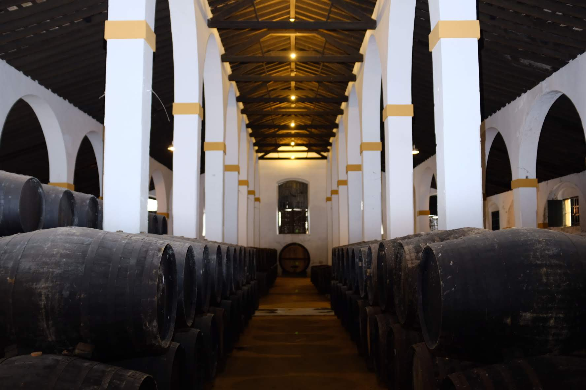
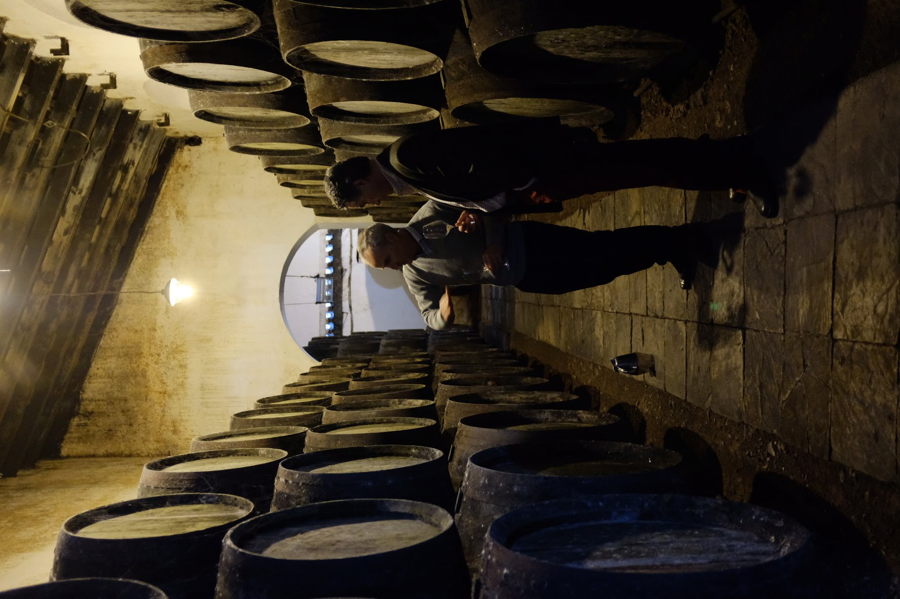
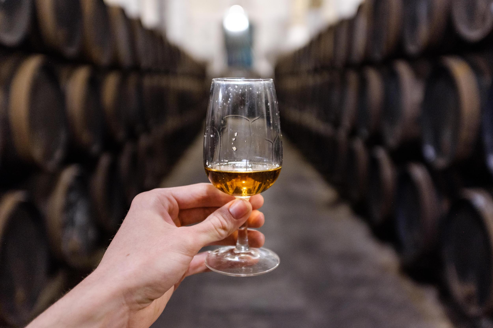

Finaliza tu whisky en barricas de jerez desde Jerez, España. Enriquece single malts y blends con complejidad y profundidad en capas.
Solicitar PresupuestoLas barricas de jerez han sido la piedra angular de la maduración excepcional de whisky desde principios del siglo XIX. Seleccionadas a mano de algunas de las mejores soleras en Jerez, las Barricas Solera proporcionan una base incomparable para desarrollar whiskies de profundidad, complejidad y elegancia insondables.
Cada estilo de crianza de jerez imparte su propio carácter distintivo — desde la delicada mineralidad salina de las barricas Fino hasta la profundidad rica y aterciopelada de las barricas Pedro Ximénez. Esta notable diversidad empodera a los destiladores para crear expresiones distintivas que destacan la individualidad de su destilado mientras capturan la influencia atemporal de la maduración en jerez.
Ver Perfiles de Barricas para Whisky
Cada tipo de barrica de jerez ofrece contribuciones únicas a la maduración del whisky, desde realzar single malts con complejidad sutil hasta crear expresiones ricas similares a postres. Descubre cómo diferentes barricas de jerez transforman tu whisky.
Envejecida junto al mar en Sanlúcar de Barrameda, las barricas Manzanilla ofrecen influencia costera única con delicada salmuera y carácter marítimo. Crea whisky sofisticado con salinidad distintiva y complejidad herbal.
Envejecido bajo capa protectora de flor, las barricas Fino introducen notas salinas, de almendra verde y herbales sutiles. Perfecto para single malts que buscan complejidad elegante mientras preservan el carácter natural del whisky y la firma de la destilería.
El proceso de envejecimiento dual crea equilibrio perfecto de frescura y profundidad. Enriquece el whisky con carácter matizado de avellana, almendra tostada y especias cálidas mientras mantiene estructura elegante.
La elección clásica para maduración de whisky premium. El envejecimiento completamente oxidativo imparte carácter intenso de nuez, chocolate negro y fruta seca, creando los whiskies ricos y complejos que definen la excelencia.
El estilo de jerez más raro combina la elegancia del Amontillado con el poder del Oloroso. Crea expresiones extraordinarias de whisky con cáscara de cítricos única, notas balsámicas y complejidad inigualable para lanzamientos ultra-premium.
Dulzor intenso y riqueza oxidativa crean whisky de profundidad extraordinaria. Imparte poderoso carácter de pasas, higo y miel oscura, perfecto para whiskies estilo postre y aplicaciones de acabado.
La interacción entre el whisky y el roble curado con jerez crea una transformación compleja que involucra extractivos, ésteres y compuestos fenólicos que desarrollan los sabores sofisticados que definen el whisky envejecido premium.
Los extractivos de la barrica de jerez interactúan con los congéneres del whisky, creando compuestos de sabor complejos que desarrollan perfiles aromáticos y de gusto sofisticados con el tiempo.
La maduración prolongada permite que los ésteres del whisky se integren con compuestos derivados del jerez, creando la complejidad armoniosa característica de los destilados envejecidos premium.
La crianza de jerez imparte fenólicos ricos que añaden estructura, color y profundidad, infundiendo al whisky con las notas de sabor distintivas que definen una maduración excepcional.

Encuentra respuestas a las preguntas más comunes sobre nuestras barricas de jerez premium para maduración de whisky.
Las barricas de jerez son apreciadas por productores de whisky en todo el mundo por la profundidad, color y complejidad que imparten. Las Barricas Solera se curan con vino de Jerez certificado DO en Jerez, nuestras barricas históricas infunden destilados con notas de fruta seca, toffee, especias y cáscara de naranja. A nivel técnico, la interacción entre el destilado, el jerez y el roble promueve la oxidación y formación de ésteres, realzando la textura en boca, redondez y profundidad aromática. Esenciales para los whiskies más icónicos de Escocia como The Macallan 18 Sherry Oak, Aberlour A'Bunadh, GlenDronach y The Balvenie Single Barrel Sherry Cask, ahora prestan su carácter rico a destilerías en todo el mundo, encarnando un legado de artesanía y un puente atemporal entre la tradición española y la elaboración moderna de whisky.
Los tiempos de maduración del whisky en barricas de jerez varían según el perfil deseado y el tipo de barrica. Para aplicaciones de acabado, 6-18 meses pueden añadir carácter significativo. La maduración completa típicamente requiere 8-25+ años, con barricas Oloroso y PX a menudo utilizadas para envejecimiento más largo debido a sus sabores robustos. Las barricas Fino y Manzanilla pueden usarse durante períodos más cortos para preservar características delicadas. Estamos encantados de proporcionar orientación basada en tu estilo específico de whisky y objetivos.
¿Listo para elevar tu whisky? Conéctate con nosotros para recomendaciones personalizadas y soluciones de barricas de jerez.